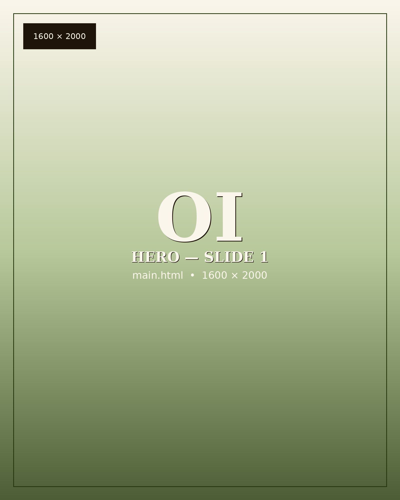
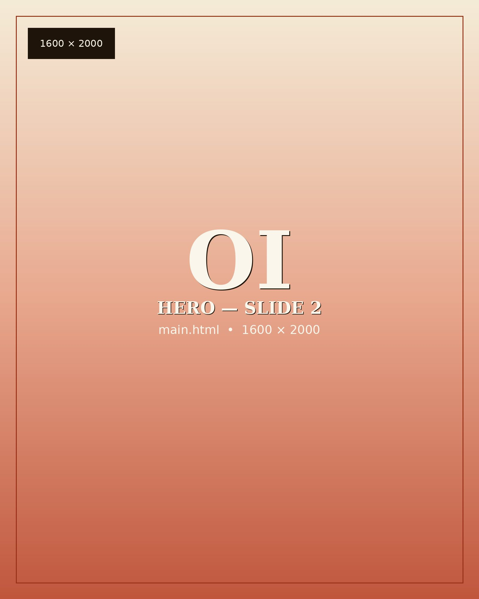
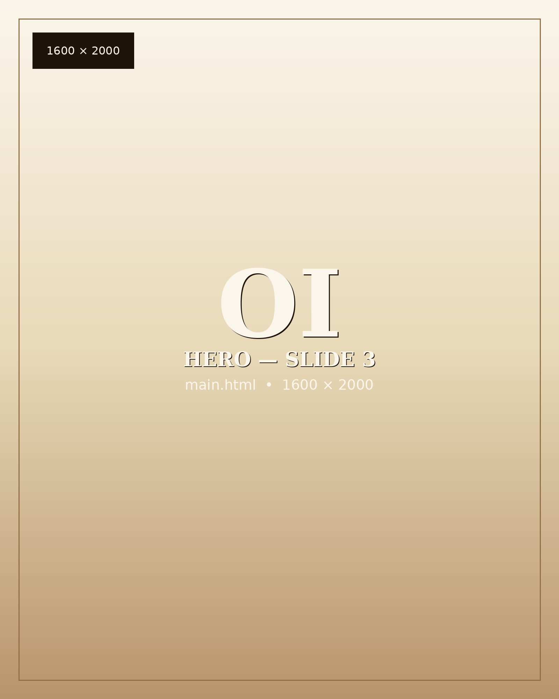

Onyx Isle designs international travel programs, executive sabbaticals, corporate retreats, and curated cohort experiences for leaders, teams, and institutions. The discipline is to engineer the conditions in which a single trip changes the trajectory of a year.



The premise is direct. Curated travel, executed with discipline, is among the most efficient instruments available for accelerating leadership, deepening institutional relationships, and producing the cross-cultural fluency that compounds across a career. Onyx Isle exists to design and operate these experiences for individuals and institutions for whom an off-the-shelf itinerary will not produce the outcomes they need.
We work with executives, founders, university cohorts, corporate teams, athletic delegations, and creative practices. The itinerary is planned in granular detail, but the itinerary is only a portion of the practice. The larger portion is the work that surrounds it. The cultural preparation that lets a guest arrive intellectually ready. The introductions that turn an itinerary into a network. The facilitation that turns a group into a cohort. The integration work that turns an experience into a set of decisions made differently in the year that follows.
Three outcomes, offered without qualification. Every program is reverse-engineered from them. If a trip, a retreat, or a commissioned engagement does not produce all three, we have not delivered the work we agreed to do.
The value of a network is not the count of names inside it. It is the speed at which a useful name surfaces when a moment calls for one. Onyx Isle assembles cohorts whose members keep turning out to be the right people, in the years that follow.
Perspective is what becomes available when you have spent time outside the environment in which you usually think. We construct these vantage points with deliberate care, in destinations and in company that reward sustained attention.
Opportunity is usually present long before it becomes visible. The work is to arrange the conditions under which the right opportunity becomes legible to a person who is ready to act on it.
Onyx Isle plans and operates international expeditions, executive sabbaticals, corporate and team retreats, and curated cohort programs for universities and institutions. We design commissioned curricula, deliver custom trainings in cross-cultural practice and emerging technology, and convene small high-trust gatherings that would not otherwise come together.
The unglamorous portion of the practice is the portion most clients eventually thank us for. The pre-travel preparation that allows a guest to arrive intellectually ready. The cultural and logistical groundwork on the destination side. The introductions that only happen because someone has taken the trouble to assemble them. The integration work that turns the experience into a set of decisions actually made in the year that follows.
The destination is not the business. The transformation is the business. The destination is the most reliable instrument we have found for producing it.
We were nine, which is the right number for an expedition of this kind. Large enough that introductions multiply. Small enough that no traveler is alone with a first impression. On the morning we left the city, our host asked a question that reorganized the rest of the week for each of us in a different way. I will not repeat the question here. I will only say that it would not have been asked in a larger group, and would not have landed on a person who had not already given the place three days to begin its work. This is the practice. Not the destination. Not the itinerary. The patient construction of the conditions under which the right question can find the right listener.
Onyx Isle works by introduction and by inquiry. There is no catalog, no fixed itinerary, and no posted price list. Every engagement begins with a written conversation about what you are considering and what would make the trip worth taking. We respond personally and within two business days.